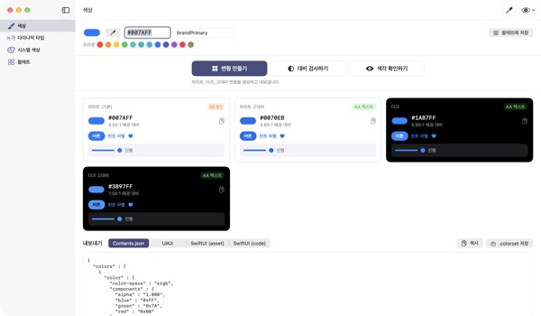
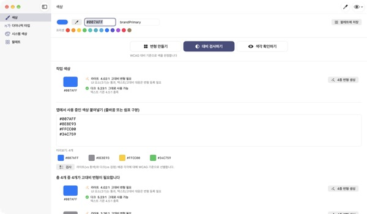
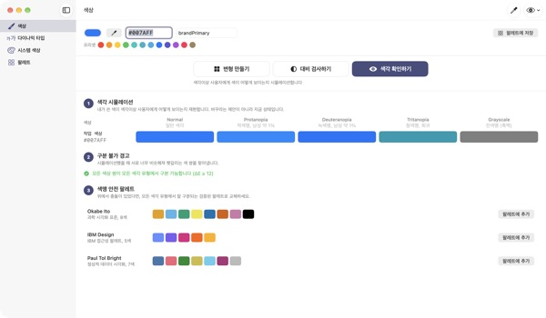
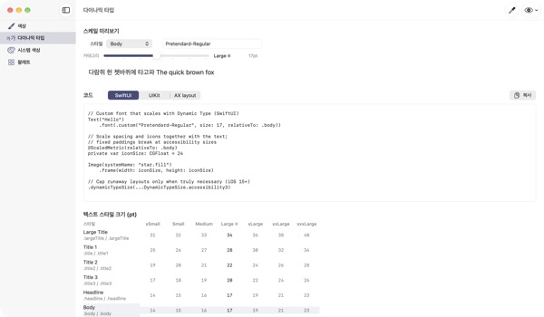

색 하나 넣으면
네 가지 모드로
시스템 컬러는 다크 모드와 대비 증가에 맞춰 알아서 바뀌지만 브랜드 컬러는 그대로입니다. TetraTint는 라이트 색 하나로 라이트, 라이트 고대비, 다크, 다크 고대비 변형을 만들고 바로 Xcode로 내보냅니다.
모든 기능이 무료입니다. macOS 14 이상.

내 브랜드 컬러를 넣어 보세요
hex 값을 붙여 넣거나 프리셋을 눌러 보세요. 앱과 같은 계산으로 네 가지 변형과 배경 대비가 바로 나옵니다.
다크 모드에서 브랜드 컬러가 묻힌 적 있나요?
라이트 모드에서 고른 파란색이 검은 배경에서는 탁해 보이고, 대비 증가를 켠 사용자에게는 글자가 잘 안 읽힙니다. 모드마다 색을 손으로 찾고 대비를 계산기로 재다 보면 반나절이 갑니다. TetraTint는 시스템 컬러가 모드마다 움직이는 방식을 따라 변형을 만들고, 각 변형이 기준을 넘는지 그 자리에서 보여 줍니다.
쓰고 있는 색을 한 번에 검사합니다
앱에서 쓰는 hex 목록을 통째로 붙여 넣으면 색마다 그대로 써도 되는지, 고대비 변형이 필요한지, 장식용으로만 써야 하는지 판정합니다.
문제가 있는 색은 클릭 한 번으로 4가지 변형을 만들어 팔레트에 저장합니다. App Store 접근성 표기의 충분한 대비 항목을 준비할 때도 그대로 쓸 수 있습니다.

색각이상 사용자의 눈으로 봅니다
팔레트가 적색맹, 녹색맹, 청색맹, 흑백에서 어떻게 보이는지 재현하고, 너무 비슷해져 헷갈리는 색 쌍을 경고로 알려 줍니다.
Okabe–Ito, IBM, Paul Tol 색맹 안전 팔레트를 클릭 한 번으로 가져올 수 있고, 오른쪽 위 눈 아이콘으로 앱 화면 전체를 색각이상 상태로 미리 볼 수도 있습니다.

커스텀 폰트도 글자 크기를 따릅니다
11개 텍스트 스타일과 7단계 크기 표를 보고, 슬라이더로 단계를 바꾸며 실제 크기를 미리 봅니다.
폰트의 PostScript 이름을 넣으면 UIKit, SwiftUI, @ScaledMetric 코드와 큰 글자에서 레이아웃을 바꾸는 코드를 만들어 줍니다.

시작은 세 단계면 됩니다
- 1
기준 색을 넣습니다
hex를 붙여 넣거나, 화면 어디서든 스포이드로 찍거나, 프리셋을 고릅니다.
- 2
네 가지 변형을 확인합니다
배지로 대비를 보고, 브랜드 톤과 다른 변형은 컬러 피커로 다듬습니다.
- 3
Xcode로 내보냅니다
Contents.json, .colorset, UIKit이나 SwiftUI 코드로 복사하거나 저장합니다.
변형을 만드는 규칙과 배지
- 라이트 (기본)
- 넣은 색 그대로
- 라이트 고대비
- 채도를 조금 올리고, 흰 배경 대비 4.5:1이 될 때까지 어둡게
- 다크
- 조금 더 밝고 선명하게 (명도 +5, 채도 +3)
- 다크 고대비
- 검은 배경 대비 7:1이 될 때까지 밝게
- AA 텍스트
- 배경 대비 4.5:1 이상, 본문 글자에 써도 됩니다
- UI 3:1
- 3:1 이상, 버튼과 아이콘에는 되지만 글자에는 부족합니다
- 낮음
- 3:1 미만, 글자나 아이콘, 상태 표시에 쓰지 않습니다
- 내보내기
- Contents.json · .colorset · UIKit · SwiftUI, 팔레트 전체는 .xcassets 하나로
시스템 컬러 참고 값은 Apple 휴먼 인터페이스 가이드라인 기준이며 OS 업데이트에 따라 달라질 수 있습니다. 실제 앱에서는 시스템 컬러 API를 쓰세요.
자주 묻는 질문
정말 무료인가요?
네. 모든 기능이 무료이고 계정도 광고도 없습니다. 도움이 됐다면 설정에서 팁을 남길 수 있지만, 팁으로 열리는 기능은 없습니다.
자동으로 만든 변형이 브랜드 톤과 안 맞아요.
각 변형 카드의 컬러 피커로 하나씩 고칠 수 있습니다. '전체 다시 생성'을 누르면 수동 편집을 버리고 기준 색에서 다시 만듭니다.
변형은 어떤 기준으로 만들어지나요?
Apple 시스템 컬러가 모드마다 달라지는 실제 패턴을 따릅니다. 다크에서는 조금 더 밝고 선명하게, 라이트 고대비는 흰 배경 대비 4.5:1, 다크 고대비는 검은 배경 대비 7:1을 넘도록 맞춥니다.
색각 시뮬레이션의 경고는 무슨 뜻인가요?
시뮬레이션했을 때 두 색의 차이(ΔE)가 12보다 작아져 구분하기 어려운 쌍이라는 뜻입니다. 색만으로 상태를 구분하지 말고 아이콘, 패턴, 라벨을 함께 쓰거나 안전 팔레트로 바꾸세요.
커스텀 폰트에 다이나믹 타입을 적용하려면요?
다이나믹 타입 화면에 폰트의 PostScript 이름을 넣고 스타일을 고르면 UIKit, SwiftUI, @ScaledMetric 코드가 나옵니다. 접근성 크기에서 Body는 기본의 3배가 넘게 커지니 고정 높이와 lineLimit(1)은 피하세요.
내보낸 색이 실제 앱에서 시스템 색과 다르게 보여요.
시스템 컬러 참고 값은 휴먼 인터페이스 가이드라인 문서 기준이라 OS 릴리스마다 달라질 수 있습니다. 시스템 색은 늘 UIColor나 Color API로 쓰세요.
저장한 팔레트는 어디에 보관되나요?
이 Mac에만 저장됩니다. 클라우드로 동기화하거나 보내지 않습니다. 자세한 내용은 개인정보처리방침을 참고해 주세요.
스포이드로 추출한 색이 저장되나요?
아니요. 가리킨 지점의 색상 값만 읽어 작업 색상으로 쓰고, 화면 이미지는 저장하거나 보내지 않습니다.
어떤 Mac에서 쓸 수 있나요?
macOS 14 (Sonoma) 이상에서 동작합니다. 내보내기를 쓸 때는 파일을 저장할 위치를 직접 고릅니다.
버그 신고, 기능 제안, 사용 문의는 leeo@kakao.com로 보내 주세요. 보통 2~3일 안에 답장드립니다.